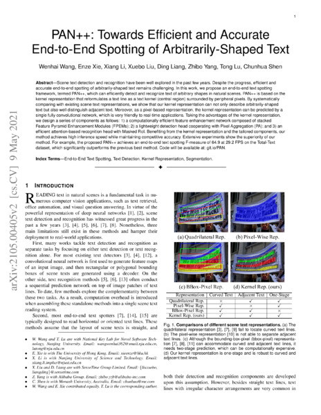
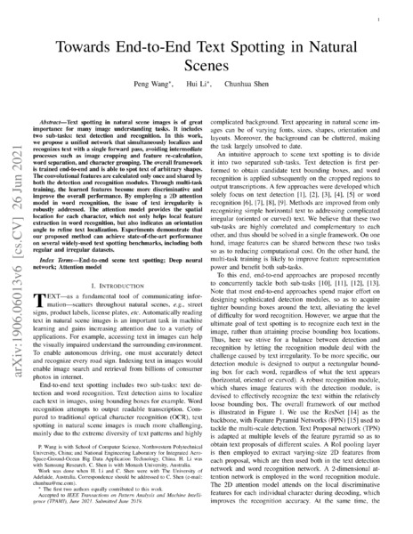

Google scholar (28924 citations) , DBLP , arXiv .
2021
Journal
 Exploring the capacity of an orderless box discretization network for multi-orientation scene text detection
Exploring the capacity of an orderless box discretization network for multi-orientation scene text detection
 Y. Liu, T. He, H. Chen, X. Wang, C. Luo, S. Zhang, C. Shen, L. Jin.
International Journal of Computer Vision (IJCV), 2021.
arXivbibtexgoogle scholarsemantic scholarproject webpage
Y. Liu, T. He, H. Chen, X. Wang, C. Luo, S. Zhang, C. Shen, L. Jin.
International Journal of Computer Vision (IJCV), 2021.
arXivbibtexgoogle scholarsemantic scholarproject webpageUnsupervised scale-consistent depth learning from video
J. Bian, H. Zhan, N. Wang, Z. Li, L. Zhang, C. Shen, M. Cheng, I. Reid.
International Journal of Computer Vision (IJCV), 2021.
arXivbibtexgoogle scholarsemantic scholarproject webpageLearning deep part-aware embedding for person retrieval
Y. Zhao, C. Shen, X. Yu, H. Chen, Y. Gao, S. Xiong.
Pattern Recognition (PR), 2021.
bibtexgoogle scholarsemantic scholarAn adversarial human pose estimation network injected with graph structure
L. Tian, P. Wang, G. Liang, C. Shen.
Pattern Recognition (PR), 2021.
bibtexgoogle scholarsemantic scholar Effective training of convolutional neural networks with low-bitwidth weights and activations
B. Zhuang, J. Liu, M. Tan, L. Liu, I. Reid, C. Shen.
IEEE Transactions on Pattern Analysis and Machine Intelligence (TPAMI), 2021.
arXivbibtexgoogle scholarsemantic scholar
Effective training of convolutional neural networks with low-bitwidth weights and activations
B. Zhuang, J. Liu, M. Tan, L. Liu, I. Reid, C. Shen.
IEEE Transactions on Pattern Analysis and Machine Intelligence (TPAMI), 2021.
arXivbibtexgoogle scholarsemantic scholar Virtual normal: enforcing geometric constraints for accurate and robust depth prediction
W. Yin, Y. Liu, C. Shen.
IEEE Transactions on Pattern Analysis and Machine Intelligence (TPAMI), 2021.
arXivbibtexgoogle scholarsemantic scholarproject webpage
Virtual normal: enforcing geometric constraints for accurate and robust depth prediction
W. Yin, Y. Liu, C. Shen.
IEEE Transactions on Pattern Analysis and Machine Intelligence (TPAMI), 2021.
arXivbibtexgoogle scholarsemantic scholarproject webpagePAN++: towards efficient and accurate end-to-end spotting of arbitrarily-shaped text
W. Wang, E. Xie, X. Li, X. Liu, D. Liang, Z. Yang, T. Lu, C. Shen.
IEEE Transactions on Pattern Analysis and Machine Intelligence (TPAMI), 2021.
arXivbibtexgoogle scholarsemantic scholarTowards end-to-end text spotting in natural scenes
P. Wang, H. Li, C. Shen.
IEEE Transactions on Pattern Analysis and Machine Intelligence (TPAMI), 2021.
arXivbibtexgoogle scholarsemantic scholar
Conference
Diverse knowledge distillation for end-to-end person search
X. Zhang, X. Wang, J. Bian, C. Shen, M. You.
Proc. AAAI Conference on Artificial Intelligence (AAAI’21), 2021.
bibtexgoogle scholarsemantic scholarSA-BNN: state-aware binary neural network
C. Liu, P. Chen, B. Zhuang, C. Shen, B. Zhang, W. Ding.
Proc. AAAI Conference on Artificial Intelligence (AAAI’21), 2021.
bibtexgoogle scholarsemantic scholarDeep reasoning network for few-shot semantic segmentation
Y. Zhuge, C. Shen.
Proc. ACM International Conference on Multimedia (ACMMM’21), 2021.
bibtexgoogle scholarsemantic scholar